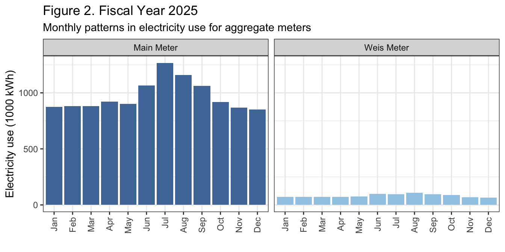
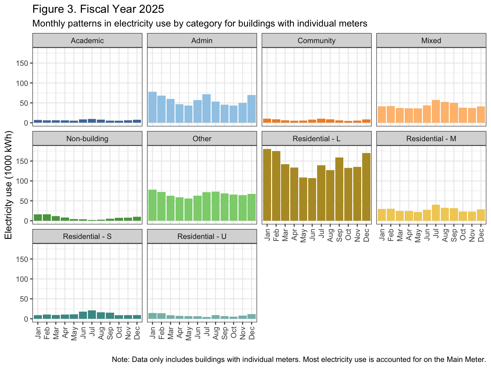
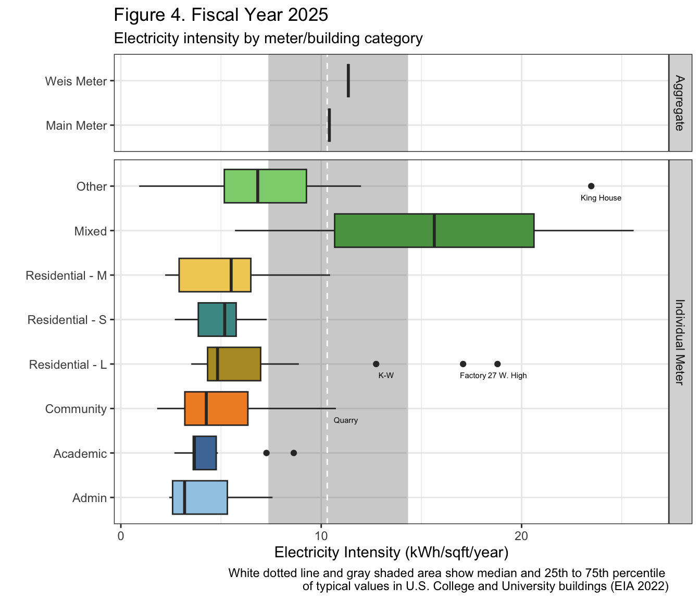
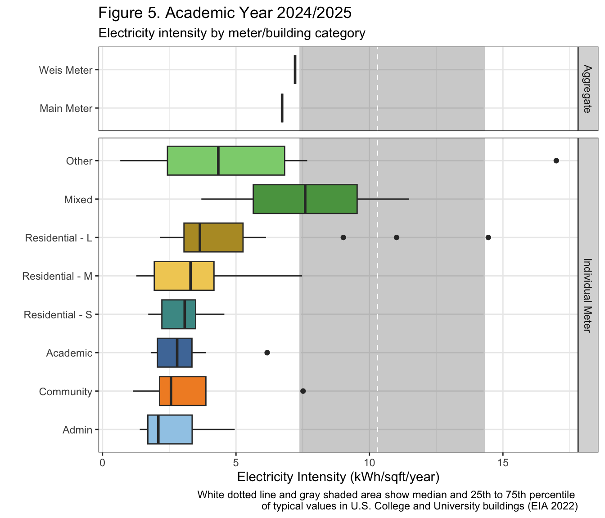

Campus building summary
Maggie Douglas
03/17/26
Load data
library(tidyverse)
library(DT) # library to create tables
library(scales) # library to format dollars
library(RColorBrewer)
library(paletteer)
is_outlier <- function(x) {
return(x < quantile(x, 0.25, na.rm = T) - 1.5 * IQR(x, na.rm = T) | x > quantile(x, 0.75, na.rm = T) + 1.5 * IQR(x, na.rm = T))
}daily_full <- read.csv("./output/kwh_daily_2026-03-17.csv") %>%
mutate(date = as_date(date)) # convert back to date
joined_full <- read.csv("./output/kwh_annual_2026-03-17.csv")
joined_acad <- read.csv("./output/kwh_academic_2026-03-17.csv")
total <- joined_full %>%
filter(meter != "Submeter" & type != "Res Hall - U" & type != "Solar") %>%
summarize(kwh = sum(kwh, na.rm = T),
kwh_corr = sum(kwh_corr, na.rm = T),
sqft = sum(sqft, na.rm = T)) %>%
mutate(kwh_sqft = kwh_corr/sqft,
meter = "Total")
total_acad <- joined_acad %>%
filter(meter != "Submeter" & type != "Res Hall - U" & type != "Solar") %>%
summarize(kwh = sum(kwh, na.rm = T),
kwh_corr = sum(kwh_corr, na.rm = T),
sqft = sum(sqft, na.rm = T)) %>%
mutate(kwh_sqft = kwh_corr/sqft,
meter = "Total")
buildings <- read.csv("./keys/fy25_building_list_updated.csv") %>%
mutate(meter = ifelse(weis_meter == 1, "Weis Meter",
ifelse(main_meter == 0 & weis_meter == 0, "Individually Metered", "Main Meter")))
# store conversion factors
dollars_kwh <- 0.08138507
co2_kg_kwh <- 0.30082405# summarize # buildings by meter status
bldg_sum <- buildings %>%
filter(NAME != "Main Meter") %>%
group_by(meter) %>%
summarize(number = n())
bldg_tot <- bldg_sum %>%
summarize(number = sum(number)) %>%
mutate(meter = "Total")
bldg_comb <- rbind(bldg_sum, bldg_tot)
# generate summary for Main, Weis, and Individual meters
joined_agg <- joined_full %>%
ungroup() %>%
filter(meter != "Submeter" & type != "Res Hall - U" & type != "Solar") %>%
group_by(meter) %>%
summarize(kwh = sum(kwh, na.rm = T),
kwh_corr = sum(kwh_corr, na.rm = T),
sqft = sum(sqft, na.rm = T)) %>%
mutate(kwh_sqft = kwh_corr/sqft) %>%
rbind(total) %>%
mutate(dollars = kwh_corr*dollars_kwh,
ghg_MTCO2 = (kwh_corr*co2_kg_kwh)/1000) %>%
select(-kwh) %>%
arrange(kwh_corr)
joined_agg$meter <- factor(joined_agg$meter,
levels = c("Main Meter - Total",
"Weis Meter - Total",
"Individual", "Total"),
labels = c("Main Meter", "Weis Meter",
"Individually Metered","Total"))
joined_tot <- joined_agg %>%
left_join(bldg_comb, by = "meter")# generate summary by building category for individually metered buildings
joined_cat <- joined_full %>%
filter(meter %in% c("Individual","Submeter")) %>%
mutate(kwh_sqft = kwh_corr/sqft, # calculate kwh per sqft
kwh_person = kwh_corr/occupants,
dollars = kwh_corr*dollars_kwh,
ghg_kgCO2 = kwh_corr*co2_kg_kwh) %>%
group_by(type) %>%
summarize(n = n(),
kwh = sum(kwh_corr),
dollars = sum(dollars),
ghg_kgCO2 = sum(ghg_kgCO2),
sqft = median(sqft, na.rm = T),
med_kwh_sqft = median(kwh_sqft, na.rm = T),
kwh_sqft_25 = quantile(kwh_sqft, .25, na.rm = T),
kwh_sqft_75 = quantile(kwh_sqft, .75, na.rm = T)) %>%
arrange(-kwh)Electricity use summary
joined_pretty_tot <- joined_tot %>%
mutate(kwh = round(kwh_corr, digits = 0),
dollars = paste("$",round(dollars, digits = 0)),
ghg_MTCO2 = round(ghg_MTCO2, digits = 0),
sqft = round(sqft, digits = 0),
kwh_sqft = round(kwh_sqft, digits = 1)) %>%
select(meter, number, sqft, kwh, dollars, ghg_MTCO2, kwh_sqft) %>%
arrange(kwh)
joined_pretty_cat <- joined_cat %>%
mutate(kwh = round(kwh, digits = 0),
dollars = paste("$",round(dollars, digits = 0)),
ghg_MTCO2 = round(ghg_kgCO2/1000, digits = 0),
sqft = round(sqft, digits = 0),
med_kwh_sqft = round(med_kwh_sqft, digits = 1),
kwh_sqft_25 = round(kwh_sqft_25, digits = 1),
kwh_sqft_75 = round(kwh_sqft_75, digits = 1)) %>%
select(type, n, sqft, med_kwh_sqft, kwh_sqft_25, kwh_sqft_75) %>%
arrange(desc(med_kwh_sqft)) %>%
filter(!is.na(med_kwh_sqft))datatable(joined_pretty_tot,
rownames = FALSE,
colnames = c("Meter status","Buildings", "Square\nfootage", "kWh", "Est. cost",
"CO2e\n(MT)", "kWh per\nsqft"),
filter = "none",
class = "compact",
options = list(pageLength = 4, autoWidth = TRUE, dom = 't'),
caption = "Table 1. Building and electricity summary by meter status in Fiscal Year 2025. Annual estimates for each meter were adjusted to account for missing days of electricity data.")datatable(joined_pretty_cat,
rownames = FALSE,
colnames = c("Building\ntype","Buildings\nwith data", "Median\nsquare\nfootage", "Median\nkWh\nper sqft",
"25th Perc.", "75th Perc."),
filter = "none",
class = "compact",
options = list(pageLength = 11, autoWidth = TRUE, dom = 't'),
caption = "Table 2. Descriptive statistics for annual electricity use by building type for those buildings with individual electricity use data (n = 81 buildings). Annual estimates for each meter were adjusted to account for missing days of electricity data.")Electricity use over the year
daily_graph <- daily_full %>%
mutate(date = as_date(date),
month = month(date, label = TRUE),
day = wday(date, label = TRUE),
type_brief = recode(type,
'Res Hall - U' = 'Residential',
'Res Hall - S' = 'Residential',
'Res Hall - M' = 'Residential',
'Res Hall - L' = 'Residential')) %>%
filter(!is.na(month))
ggplot(filter(daily_graph, meter != "Submeter"),
aes(x = month, y = kwh/10^6, fill = reorder(type_brief, kwh, FUN = sum))) +
geom_col(position = "stack") +
scale_fill_paletteer_d("ggthemes::Tableau_20") +
#scale_fill_brewer(type = "qual", palette = "Paired") +
theme_bw() +
labs(x = "", y = "Electricity use (million kWh)", fill = "",
title = "Figure 1. Fiscal Year 2025",
subtitle = "Monthly patterns in electricity use")
ggplot(filter(daily_graph, meter %in% c("Main Meter - Total", "Weis Meter - Total")),
aes(x = month, y = kwh/10^3, fill = type_brief)) +
geom_col(position = "stack") +
facet_wrap(. ~ type_brief) +
scale_fill_paletteer_d("ggthemes::Tableau_20") +
theme_bw() +
theme(legend.position = "none") +
theme(axis.text.x = element_text(angle = 90, vjust = 0.5, hjust = 1)) +
labs(x = "", y = "Electricity use (1000 kWh)", fill = "",
title = "Figure 2. Fiscal Year 2025",
subtitle = "Monthly patterns in electricity use for aggregate meters",
)
ggplot(filter(daily_graph, meter == "Individual" & type != "Solar"),
aes(x = month, y = kwh/10^3, fill = type_brief)) +
geom_col(position = "stack") +
facet_wrap(. ~ type_brief) +
scale_fill_paletteer_d("ggthemes::Tableau_20") +
theme_bw() +
theme(legend.position = "none") +
theme(axis.text.x = element_text(angle = 90, vjust = 0.5, hjust = 1)) +
labs(x = "", y = "Electricity use (1000 kWh)", fill = "",
title = "Figure 3. Fiscal Year 2025",
subtitle = "Monthly patterns in electricity use by category for buildings with individual meters",
caption = "Note: Data only includes buildings with individual meters. Most electricity use is accounted for on the Main Meter.")
| Version | Author | Date |
|---|---|---|
| 012f9a1 | maggiedouglas | 2026-03-16 |
Electricity intensity
intensity <- joined_full %>%
filter(!(type %in% c("Residential - U","Solar", "Non-building"))) %>%
mutate(kwh_sqft = kwh_corr/sqft,
meter_type = ifelse(type %in% c("Main Meter","Weis Meter"), "Aggregate", "Individual Meter"),
outlier = case_when(
NAME == "King House" ~ "King House",
NAME == "Kisner - Woodward" ~ "K-W",
NAME == "Factory Apts." ~ "Factory",
NAME == "Rector Science Center" ~ "Rector",
NAME == "Quarry, The " ~ "Quarry",
NAME == "27 W. High St." ~ "27 W. High"
))
# median and IQR come from EIA (2022) table, annual kWh per square foot for Colleges/Universities
# https://www.eia.gov/consumption/commercial/data/2018/ce/pdf/c22.pdf
ggplot(intensity,
aes(x = reorder(type, kwh_sqft, FUN = "median"),
y = kwh_sqft, fill = type)) +
annotate("rect", xmin = -Inf, xmax = Inf, ymin = 7.4, ymax = 14.3, color = "lightgray", alpha = 0.3) +
geom_hline(yintercept = 10.3, linetype = "dashed", color = "white") +
facet_grid(meter_type ~ ., scales = "free_y", space = "free_y") +
geom_boxplot() +
geom_label(aes(label = outlier), na.rm = TRUE, nudge_x = -0.25, nudge_y = 0.5,
color = "black", fill = "white", size = 2, alpha = 0, label.size = NA) +
scale_fill_paletteer_d("ggthemes::Tableau_20") +
coord_flip() +
theme_bw() +
theme(legend.position = "none") +
labs(x = "", y = "Electricity Intensity (kWh/sqft/year)",
title = "Figure 4. Fiscal Year 2025",
subtitle = "Electricity intensity by meter/building category",
caption = "White dotted line and gray shaded area show median and 25th to 75th percentile \nof typical values in U.S. College and University buildings (EIA 2022)")
intensity_acad <- joined_acad %>%
filter(!(type %in% c("Residential - U","Solar", "Non-building"))) %>%
mutate(kwh_sqft = kwh_corr/sqft,
meter_type = ifelse(type %in% c("Main Meter","Weis Meter"), "Aggregate", "Individual Meter"))
ggplot(intensity_acad,
aes(x = reorder(type, kwh_sqft, FUN = "median"),
y = kwh_sqft, fill = type)) +
annotate("rect", xmin = -Inf, xmax = Inf, ymin = 7.4, ymax = 14.3, color = "lightgray", alpha = 0.3) +
geom_hline(yintercept = 10.3, linetype = "dashed", color = "white") +
facet_grid(meter_type ~ ., scales = "free_y", space = "free_y") +
scale_fill_paletteer_d("ggthemes::Tableau_20") +
geom_boxplot() +
coord_flip() +
theme_bw() +
theme(legend.position = "none") +
labs(x = "", y = "Electricity Intensity (kWh/sqft/year)",
title = "Figure 5. Academic Year 2024/2025",
subtitle = "Electricity intensity by meter/building category",
caption = "White dotted line and gray shaded area show median and 25th to 75th percentile \nof typical values in U.S. College and University buildings (EIA 2022)")
| Version | Author | Date |
|---|---|---|
| 012f9a1 | maggiedouglas | 2026-03-16 |
Sources
Energy Information Administration (EIA). (2022). 2018 Commercial Buildings Energy Consumption Survey (CBECS). https://www.eia.gov/consumption/commercial/
Leary, N. (2025). Dickinson College Greenhouse Gas Inventory 2008-2023. Center for Sustainability Education.
sessionInfo()R version 4.5.2 (2025-10-31)
Platform: x86_64-apple-darwin20
Running under: macOS Ventura 13.7.8
Matrix products: default
BLAS: /Library/Frameworks/R.framework/Versions/4.5-x86_64/Resources/lib/libRblas.0.dylib
LAPACK: /Library/Frameworks/R.framework/Versions/4.5-x86_64/Resources/lib/libRlapack.dylib; LAPACK version 3.12.1
locale:
[1] en_US.UTF-8/en_US.UTF-8/en_US.UTF-8/C/en_US.UTF-8/en_US.UTF-8
time zone: America/New_York
tzcode source: internal
attached base packages:
[1] stats graphics grDevices utils datasets methods base
other attached packages:
[1] paletteer_1.7.0 RColorBrewer_1.1-3 scales_1.4.0 DT_0.34.0
[5] lubridate_1.9.5 forcats_1.0.1 stringr_1.6.0 dplyr_1.2.0
[9] purrr_1.2.1 readr_2.2.0 tidyr_1.3.2 tibble_3.3.1
[13] ggplot2_4.0.2 tidyverse_2.0.0
loaded via a namespace (and not attached):
[1] sass_0.4.10 generics_0.1.4 prismatic_1.1.2 stringi_1.8.7
[5] hms_1.1.4 digest_0.6.39 magrittr_2.0.4 timechange_0.4.0
[9] evaluate_1.0.5 grid_4.5.2 fastmap_1.2.0 rprojroot_2.1.1
[13] workflowr_1.7.2 jsonlite_2.0.0 whisker_0.4.1 rematch2_2.1.2
[17] promises_1.5.0 crosstalk_1.2.2 jquerylib_0.1.4 cli_3.6.5
[21] rlang_1.1.7 withr_3.0.2 cachem_1.1.0 yaml_2.3.12
[25] otel_0.2.0 tools_4.5.2 tzdb_0.5.0 httpuv_1.6.16
[29] vctrs_0.7.1 R6_2.6.1 lifecycle_1.0.5 git2r_0.36.2
[33] htmlwidgets_1.6.4 fs_1.6.7 pkgconfig_2.0.3 pillar_1.11.1
[37] bslib_0.10.0 later_1.4.8 gtable_0.3.6 glue_1.8.0
[41] Rcpp_1.1.1 xfun_0.56 tidyselect_1.2.1 rstudioapi_0.18.0
[45] knitr_1.51 farver_2.1.2 htmltools_0.5.9 labeling_0.4.3
[49] rmarkdown_2.30 compiler_4.5.2 S7_0.2.1